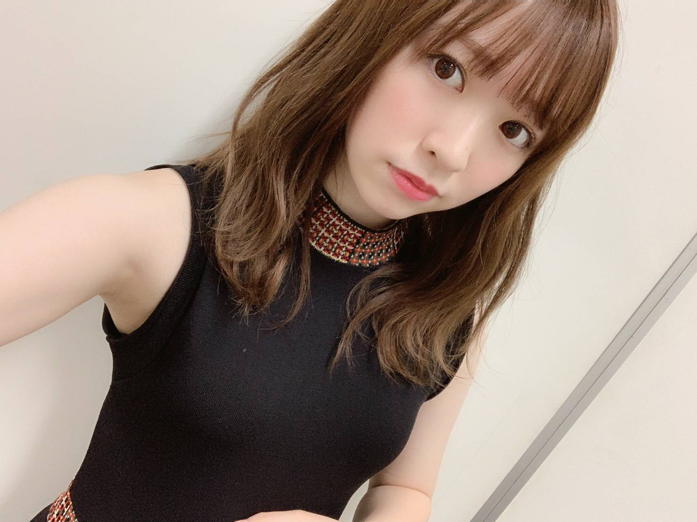
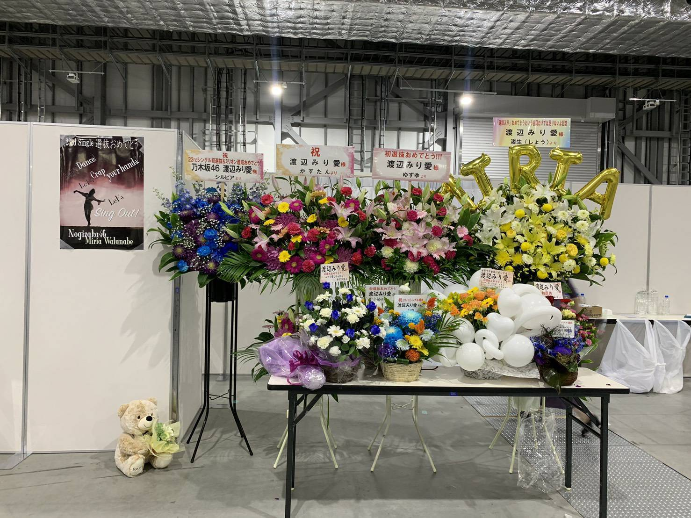
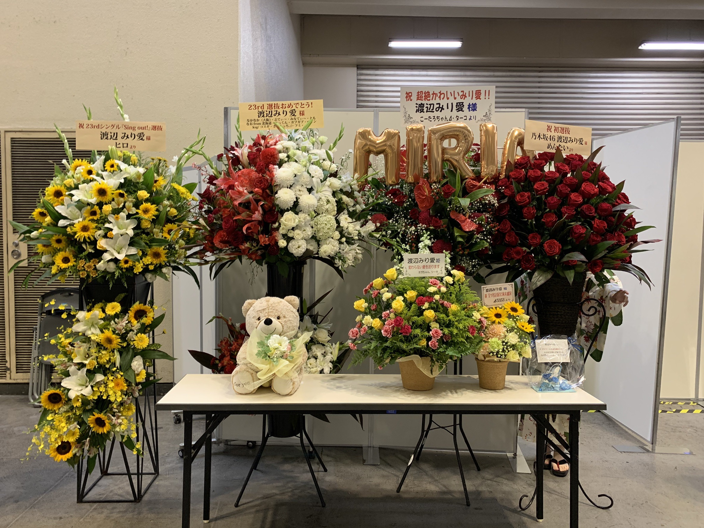
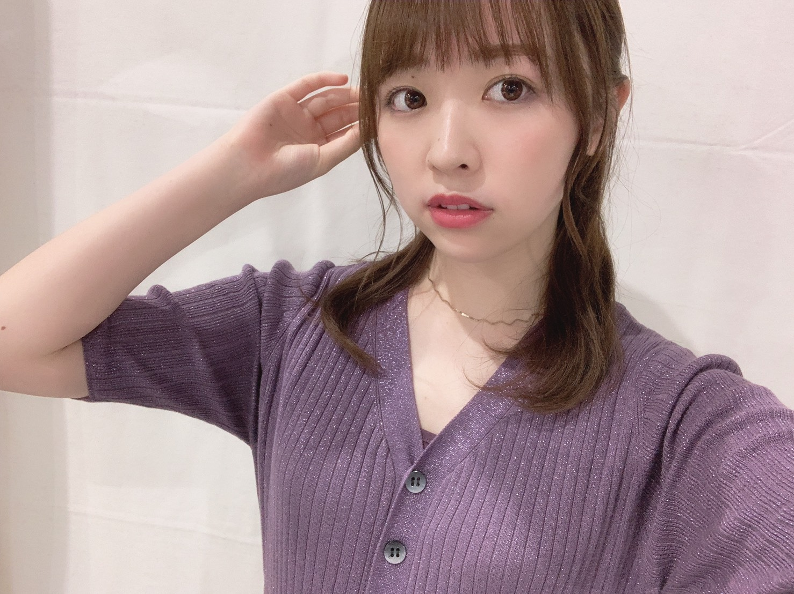
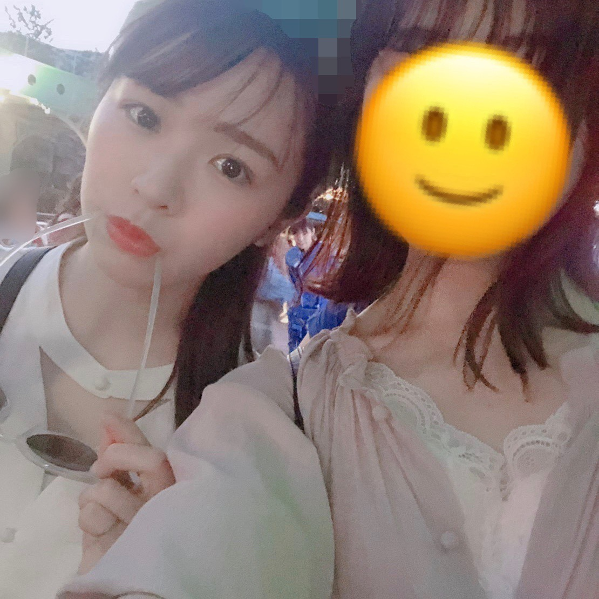

2019/0710Wed阿頼耶識

幕張メッセ、京都パルスプラザ
個別握手会がありました！
お越し下さった皆様、ありがとうございました〜


はあ〜、色々な色の素敵なお花達！
ファンの皆さん私の好みを分かっていらっしゃる
色合いもお花も。とても素敵です。
ありがとうございます！

全国ツアーが始まりました！
今年も1曲目からダラダラに汗をかいております。
全身全霊、そして楽しんで
明治神宮球場まで駆け抜けられたらなと
思います。
うちわやタオル、サイリウムも
しっかり見えてます。
頑張る励みになってます、ありがとうございます！

先日久しぶりに友達と会う事ができました。
夢の国へ行ってきてみました！
あれですよ、私夢の国前に苦手だって
言った気がするけど、
私がインドアだし毎回会える訳ではないから
どうせならパーっとしたいねと話し合い、
パーっと出来る場所へ行ってまいりました。笑
普段は絶対断固付けない耳も
友達に勧められて買っちゃいました、、
やっちまった、、笑
玲香さんの卒業が発表されました。
ずっと背中を見てきました
同じ舞台で長い期間一緒にいて
玲香さんの涙も笑顔も沢山見てきました
玲香さんと話していると
ふわ〜と心が軽くなる感じがあって
落ち着きます。
それってきっと玲香さんの魅力なのかなあと
本当に素敵な方です。
勝手ながら、ブログを読んで泣いてしまいました、、
私達は前を向いて進まなければ
いけない。
最後まで、玲香さんのあの素敵な笑顔と
背中を見て色々な事を吸収していきたいです！
みり愛
2019/07/10 20:18
コメント(527)
ぶろぬありがとう！
個握幕張行った！人生初握手がみり愛で良かった！
ライブでも見つけれた、やっぱダンス上手いから尊敬する
キャプテン卒業寂しいけど誰しもいつかは来るしね
応援してます！！
個握幕張行った！人生初握手がみり愛で良かった！
ライブでも見つけれた、やっぱダンス上手いから尊敬する
キャプテン卒業寂しいけど誰しもいつかは来るしね
応援してます！！
みり愛たーーーーーん＼(^o^)／
きゃーー可愛すぎるよ(｡>﹏<｡)♡♡♡大好きだよ(*´ω｀*)
お疲れ様でした＼(^o^)／
これからも頑張って(/･ω･)／
れかたんとの残り時間大切にしてね
みり愛たんと同じダンスうまいメンバー(;_;)
きゃーー可愛すぎるよ(｡>﹏<｡)♡♡♡大好きだよ(*´ω｀*)
お疲れ様でした＼(^o^)／
これからも頑張って(/･ω･)／
れかたんとの残り時間大切にしてね
みり愛たんと同じダンスうまいメンバー(;_;)
ブログ更新ありがとう！最近のみり愛ちゃんすごく大人で綺麗！って感じで好きです。名古屋2日間行きましたー！ライブ始まって初めてのMCの時モニター映ってたけどもう既に汗だくだったね！ちゃんと見てたよ！w2日間とも最高のライブでした。次も頑張ってください！玲香さんの卒業発表はほんとにビックリしました。唐突すぎて。変わっていくね。しょうがない事だよね。いつもメンバーが卒業する時に思うけど本人が決めた事だから僕達ファンにはどうすることも出来ない。いつまでも悲しんでちゃダメだなって。次の道を応援しなきゃ！って。卒業するまでは全力で応援だ！
みり愛ブログ更新ありがとう(^^)
京都での個握ありがとうございました！
自分は、4、5部しか行ってなかったので、前半の服をブログで見れて嬉しい〜
浴衣みり愛も、オフショルみり愛も、最高に可愛いかった(^^)
久しぶりに夢の国で遊べたんだね！
こないだ、いとこ？と行ったぶりかな？
メンバーの卒業はやっぱ悲しいよね
キャプテンの最後を最高にできるように頑張ろうね！
お仕事も頑張ってね！！応援してます！！
京都での個握ありがとうございました！
自分は、4、5部しか行ってなかったので、前半の服をブログで見れて嬉しい〜
浴衣みり愛も、オフショルみり愛も、最高に可愛いかった(^^)
久しぶりに夢の国で遊べたんだね！
こないだ、いとこ？と行ったぶりかな？
メンバーの卒業はやっぱ悲しいよね
キャプテンの最後を最高にできるように頑張ろうね！
お仕事も頑張ってね！！応援してます！！
みり愛ちゃんブログ更新ありがとう
この前のビックサイトの握手会行ったよー
最高に可愛いみりあちゃんにあえて嬉しかったです。
また握手会行くね〜
この前のビックサイトの握手会行ったよー
最高に可愛いみりあちゃんにあえて嬉しかったです。
また握手会行くね〜
ブログありがとう
みり愛が夢の国に！？
みり愛が夢の国に！？
みり愛ちゃんブログ更新ありがとう！！久々のコメントです！
7/7めっちゃ行きたかったのに全落ちしちゃったの、、ほんと人気上がって余計に遠くなった気がする（ ; ; ）受験生だから終わるまでいけるかわかんないけど8/4もしかしたら久々にいくかも！笑
1/6せっかくお花出したのに1枚握手して終わったから今度はゆっくり話したい！！
7/7めっちゃ行きたかったのに全落ちしちゃったの、、ほんと人気上がって余計に遠くなった気がする（ ; ; ）受験生だから終わるまでいけるかわかんないけど8/4もしかしたら久々にいくかも！笑
1/6せっかくお花出したのに1枚握手して終わったから今度はゆっくり話したい！！
みり愛ちゃんブログありがとう
握手会のお話いっぱい〜〜
お疲れ様でした٩(๑❛ᴗ❛๑)۶ とっても綺麗☆*。
夢の国行ってきたんだね〜！
ライブや握手会など、忙しいと思うけど、お休みの時や遊ぶ時は満喫してね〜(⁎˃ᴗ˂⁎)
玲香ちゃんの卒業、寂しいけど玲香ちゃんが決めたことだから、笑顔で送り出してあげなきゃね(˙˘˙̀ ✰
みり愛ちゃんこれからも、がんばってね！
握手会のお話いっぱい〜〜
お疲れ様でした٩(๑❛ᴗ❛๑)۶ とっても綺麗☆*。
夢の国行ってきたんだね〜！
ライブや握手会など、忙しいと思うけど、お休みの時や遊ぶ時は満喫してね〜(⁎˃ᴗ˂⁎)
玲香ちゃんの卒業、寂しいけど玲香ちゃんが決めたことだから、笑顔で送り出してあげなきゃね(˙˘˙̀ ✰
みり愛ちゃんこれからも、がんばってね！
ブログありがとう。
お花たち綺麗だね
熊のぬいぐるみのお花はどちらの会場にもあったんだね！
嬉しいね
息抜きでお友達と出かけられる機会にそうやって新しい自分というか今まではやっていなかったようなことを出来るのはすごくいいんじゃないかなって思う
楽をしたい時にはっちゃけるのは1番ストレス発散にもなるしね
れいかさんの卒業は驚きとはまた違ったものを感じました。
背負ってきたものも背負わせてきたものも違うのかなって
みり愛が見てきた桜井玲香という人物がどれだけ大きな存在だったかは分からないけれど、残された時間で色んなものを学んで吸収して欲しいなって思います。
では〜
お花たち綺麗だね
熊のぬいぐるみのお花はどちらの会場にもあったんだね！
嬉しいね
息抜きでお友達と出かけられる機会にそうやって新しい自分というか今まではやっていなかったようなことを出来るのはすごくいいんじゃないかなって思う
楽をしたい時にはっちゃけるのは1番ストレス発散にもなるしね
れいかさんの卒業は驚きとはまた違ったものを感じました。
背負ってきたものも背負わせてきたものも違うのかなって
みり愛が見てきた桜井玲香という人物がどれだけ大きな存在だったかは分からないけれど、残された時間で色んなものを学んで吸収して欲しいなって思います。
では〜
ブログ更新あざす！
握手会に
ライブ楽しかったよ〜
楽しそうだね夢の国。インドアとか言いながら意外と色々行ってるよね。
楽しそうでなにより。
玲香さんとの残りの期間大切ですね。
最後に28日の横浜個握参加するのでよろしくお願いします。
これからも応援してるね。
それじゃ！
握手会に
ライブ楽しかったよ〜
楽しそうだね夢の国。インドアとか言いながら意外と色々行ってるよね。
楽しそうでなにより。
玲香さんとの残りの期間大切ですね。
最後に28日の横浜個握参加するのでよろしくお願いします。
これからも応援してるね。
それじゃ！
お疲れ様なのです└(ﾟ∀ﾟ└) (┘ﾟ∀ﾟ)┘
体調に気を付けて頑張ってね！
休日に夢の国ではしゃぐの楽しいよね！
んじゃね～！Σ⊂(ﾟДﾟ )
体調に気を付けて頑張ってね！
休日に夢の国ではしゃぐの楽しいよね！
んじゃね～！Σ⊂(ﾟДﾟ )
みり愛ちんブログ更新ありがとう！！！
握手会今回は1回あたりの枚数少ないし、何回行っても目の前にすると可愛さに緊張しちゃって上手く喋れないけどほんとに楽しかったよ、いつもありがとう。
名古屋のライブ2日目行きやした！初めて一般席応募したから初アリーナだった！ぼっち参戦だったけど女限とは違う楽しさがあったよん(コールとか周りからすごい聞こえて楽しかった笑)ファンサを貰える距離ではなかったけど肉眼で見えたからパフォーマンス中の表情まで見ることができやした！何かの曲(覚えとけよって感じだよねすまぬ笑)かずみんと楽しそうにしてたのすごい可愛かったなあ！あと改めてみり愛ちんのダンス好きだなあって思った！指先まで綺麗でほんとに感動！！絢音ちゃんとの2人でのダンスもお互いを信用してる感じが伝わってきて手握るとこの笑顔はやってやるぞ！感凄くてゾクゾクしやした
そして玲香の卒業。私も凄く凄く悲しくて泣いてしまった、、
みり愛ちんと玲香は第1回目かな？46時間テレビの絡みが好きだったなあ、玲香が膝に乗っけるやつ、可愛かったほんとに
玲香はキャプテンだしメンバーみんなの中での存在が大きいことをみんなのブログ、755から感じてそこの文章にも泣かされてしまったよ
りか
初めまして、まつと申します。
みり愛さんのブログにコメントするのは、初めてですが、読んで頂けたら幸いです。
名古屋の初日行かせてもらいました！！
全ツ初日ともあって、最高の盛り上がりでしたね〜
次は神宮の初日に仲間と行きます！！
桜井玲香さんの発表には、驚きと寂しさと、一ファンとしても感じましたが、身近にいる、皆様が一番悲しいと思います。
みり愛さんの輝いてる姿を、神宮でまた楽しみにしています。
失礼します。
みり愛さんのブログにコメントするのは、初めてですが、読んで頂けたら幸いです。
名古屋の初日行かせてもらいました！！
全ツ初日ともあって、最高の盛り上がりでしたね〜
次は神宮の初日に仲間と行きます！！
桜井玲香さんの発表には、驚きと寂しさと、一ファンとしても感じましたが、身近にいる、皆様が一番悲しいと思います。
みり愛さんの輝いてる姿を、神宮でまた楽しみにしています。
失礼します。
みり愛ちゃんブログ更新ありがとう！
ビックサイトでの個握で
初めて花を出しました
白い風船がまぁよく目立ってるやつです笑
また、出したいなぁって思ってるので
出した時また言いますっ
みり愛ちゃん握手は楽しくて
癒しを沢山貰って
同じ年だから、会う度
私も頑張ろうって思えます。
名古屋両日楽しかったです
もぅ色々と最高でした。
選抜として踊ってるみり愛ちゃんを
見て終始ウルウルしてました。
きいちゃんの企画のみり愛ちゃんが
可愛くて、だけどダンスが凄いカッコよくて
日常のみり愛ちゃんは惚れなおすくらい
カッコよかったです。
名古屋お疲れ様でした。
体調、怪我とか気を付けてね
今月末の個握でいろいろ感想は
お伝えしますね
これからも、みり愛ちゃんが
大好きです。
みり愛ちゃんがどこに居ても
みり愛ちゃんらしくみり愛ちゃんの
ペースで頑張ってね
ずっっと応援してます。
みりあ


ようこそ我が千葉県が誇る夢の国へ 笑
お仕事お疲れ様です。そして、ブログ更新ありがとうございます。
梅雨ですね。ほんとうに嫌な季節になってきました。暑いし。
熱中症などにはくれぐれもお気をつけください。
玲香さんの卒業は悲しいし、寂しいですが、最後の日まで悔いのないようにその姿を焼き付けてください。
福岡まで10日ほどになりました。怪我などお身体には気をつけてください。見に行きます。楽しみにしています。
いつも本当にありがとう。またお手紙書きますね。
梅雨ですね。ほんとうに嫌な季節になってきました。暑いし。
熱中症などにはくれぐれもお気をつけください。
玲香さんの卒業は悲しいし、寂しいですが、最後の日まで悔いのないようにその姿を焼き付けてください。
福岡まで10日ほどになりました。怪我などお身体には気をつけてください。見に行きます。楽しみにしています。
いつも本当にありがとう。またお手紙書きますね。
みり愛ちゃんお疲れ様。確かにキャプテンの卒業にはビックリしたね。若手の成長がわかったから卒業すると思うよ!寂しいけどしっかり送ろうね!応援してるよ!
みり愛ちゃん！お久しぶりです。
友達とディズニー行けて良かったね。
キャプテンのブログで泣いたみり愛ちゃんを想像してまた泣けてきたよ。みんなで楽しく前を向いて進んでいこう。それがみんなの願いだからね。これからのみり愛ちゃんも応援しているし、ファンとしてみり愛のことめちゃ好きだよ。
友達とディズニー行けて良かったね。
キャプテンのブログで泣いたみり愛ちゃんを想像してまた泣けてきたよ。みんなで楽しく前を向いて進んでいこう。それがみんなの願いだからね。これからのみり愛ちゃんも応援しているし、ファンとしてみり愛のことめちゃ好きだよ。
お疲れ様です!
みりあたーーん！
ツアー名古屋お疲れ様です！！
次は大阪に行くので頑張ってください！！
いつもいつも応援してます！
いつまでもその笑顔をみんなに届けてください！
ツアー名古屋お疲れ様です！！
次は大阪に行くので頑張ってください！！
いつもいつも応援してます！
いつまでもその笑顔をみんなに届けてください！
玲香さんが卒業するのは本当寂しいです。
みり愛ちゃんが前に進む限り少しでも力になれるようこれからも全力で応援します！
今度パシフィコの個握に行くので浴衣期待してますね^_^
みり愛ちゃんが前に進む限り少しでも力になれるようこれからも全力で応援します！
今度パシフィコの個握に行くので浴衣期待してますね^_^
ディズニーシーだ！
ニモ＆フレンズシーライダーのとこだ！
ニモ＆フレンズシーライダーのとこだ！
=͟͟͞͞(⌒ ͜ ⌒ ) =͟͟͞͞ ﾅｲｽｩ
渡辺さん
いつも元気を頂いてます。
ありがとうございます。
ブログタイトルで仰る通り、キャプテン始め1期生から脈々と次の世代へ乃木坂のDNAが延々と繋がって行くと良いですね。
これからも応援させて下さい。
ありがとうございます。
いつも元気を頂いてます。
ありがとうございます。
ブログタイトルで仰る通り、キャプテン始め1期生から脈々と次の世代へ乃木坂のDNAが延々と繋がって行くと良いですね。
これからも応援させて下さい。
ありがとうございます。
最近きれいになった!
みりーあ
ビックサイトだよー
おつかれ様
めっちゃ楽しかった
ビックサイトだよー
おつかれ様
めっちゃ楽しかった
ブログ更新ありがとう！
先日の握手会お疲れ様。
その時にもお話させてもらったけど、白と紫でSing Out!の衣装風のアレンジフラワーを贈らせてもらいました。
少しでもみり愛ちゃんの励みになればいいなと。
夏のツアーも始まったね！
早くパフォーマンスするみり愛ちゃんを観たい限り。
大阪と神宮にお邪魔する予定！
大変なこともたくさんあるだろうけど、楽しんで頑張っていこうね
夢の国行ったのか！
いつもしないことをしてみるのって刺激にもなるしいいね！
カチューシャはどんなの付けたのかな？
似合ってて可愛いんだろうなー
1人の乃木坂ファンとしてもとても哀しいと思うけど、残りの期間で色々なことをさらに吸収させてもらって、笑顔で送り出せたらいいね。
それじゃ、これからが夏本番だけど、身体には気を付けてお互い頑張っていこうね！
hideto
先日の握手会お疲れ様。
その時にもお話させてもらったけど、白と紫でSing Out!の衣装風のアレンジフラワーを贈らせてもらいました。
少しでもみり愛ちゃんの励みになればいいなと。
夏のツアーも始まったね！
早くパフォーマンスするみり愛ちゃんを観たい限り。
大阪と神宮にお邪魔する予定！
大変なこともたくさんあるだろうけど、楽しんで頑張っていこうね
夢の国行ったのか！
いつもしないことをしてみるのって刺激にもなるしいいね！
カチューシャはどんなの付けたのかな？
似合ってて可愛いんだろうなー
1人の乃木坂ファンとしてもとても哀しいと思うけど、残りの期間で色々なことをさらに吸収させてもらって、笑顔で送り出せたらいいね。
それじゃ、これからが夏本番だけど、身体には気を付けてお互い頑張っていこうね！
hideto
最近のみり愛ちゃん女っぷりがガンガン上がってるけどなんかあったのかな？いや、元々可愛かったけど女性感が上がってる気がする。
みり愛ちゃんブログ更新ありがとう！！！
ビックサイトでの個握もありがとうね！！
次の握手会は幕張全握だからまたよろしくね！
次は全ツ福岡いくよ！！
宮城個握で約束した通りニモとドリーの着ぐるみ着て参戦するから見つけたらよろしくね！！
体調に気をつけて頑張ってね！！
ビックサイトでの個握もありがとうね！！
次の握手会は幕張全握だからまたよろしくね！
次は全ツ福岡いくよ！！
宮城個握で約束した通りニモとドリーの着ぐるみ着て参戦するから見つけたらよろしくね！！
体調に気をつけて頑張ってね！！
ブログ更新ありがとう！
京都の握手会いったよ〜〜！！
楽しくて幸せな時間でした！！
またみり愛ちゃんに会えるように頑張る♪
大阪と神宮のライブ行くから精一杯タオルとペンライト振ってアピールするね！
みり愛ちゃんがどこにいても全力で応援し続けることは変わりないよ(o^^o)
体調に気をつけて全力で楽しんでね！
京都の握手会いったよ〜〜！！
楽しくて幸せな時間でした！！
またみり愛ちゃんに会えるように頑張る♪
大阪と神宮のライブ行くから精一杯タオルとペンライト振ってアピールするね！
みり愛ちゃんがどこにいても全力で応援し続けることは変わりないよ(o^^o)
体調に気をつけて全力で楽しんでね！
みりちゃん大好き♡♡
みり愛ちゃんブログ更新ありがとう！
握手会やライブお疲れ様〜
京都個握では久しぶりに会えて楽しかった！
浴衣めちゃめちゃ似合ってたよーー
これからも応援してるよ！！
握手会やライブお疲れ様〜
京都個握では久しぶりに会えて楽しかった！
浴衣めちゃめちゃ似合ってたよーー
これからも応援してるよ！！
みり愛さんブログ更新有難う
付け耳モザイクで隠したなwww
付け耳モザイクで隠したなwww
みり愛ちゃんブログ更新ありがとう〜(*´∀｀*)
3月からお会いできてなくて会いたい気持ちが溢れでて来てます
会えるのが8月だからそれまで頑張るね
みり愛ちゃんは猫とかイグアナ買いたいんだよね〜
俺は犬買いたいの。色々と大変だと思うけど一人暮らししてるから少し寂しい気持ちもあって（笑） 玄関開けたら迎えてくれるって言うのがちょっとした夢です笑
夏バテには気をつけてね〜
また更新待ってます
いつも支えになってます
ありがとう
3月からお会いできてなくて会いたい気持ちが溢れでて来てます
会えるのが8月だからそれまで頑張るね
みり愛ちゃんは猫とかイグアナ買いたいんだよね〜
俺は犬買いたいの。色々と大変だと思うけど一人暮らししてるから少し寂しい気持ちもあって（笑） 玄関開けたら迎えてくれるって言うのがちょっとした夢です笑
夏バテには気をつけてね〜
また更新待ってます
いつも支えになってます
ありがとう
どんどん大人の女性になってきて
綺麗なみりあちゃん
れんかとはしゃいでる子供みりあも
また魅力
改めて選抜おめでとう
綺麗なみりあちゃん
れんかとはしゃいでる子供みりあも
また魅力
改めて選抜おめでとう
毎回のブログ楽しみにしてます！
福岡から参戦するのでみり愛の推しメンタオル掲げて全力で
全ツ楽しみます！
福岡から参戦するのでみり愛の推しメンタオル掲げて全力で
全ツ楽しみます！
みり愛ちゃんブログ更新ありがと！
京都の握手会楽しかったよ！
俺もみり愛ちゃんと一緒に夢の国行きたいなw
玲香ちゃんの卒業寂しいよね
でも、前向いて進むしかないよね！
そして笑顔で見送ろうね！
京都の握手会楽しかったよ！
俺もみり愛ちゃんと一緒に夢の国行きたいなw
玲香ちゃんの卒業寂しいよね
でも、前向いて進むしかないよね！
そして笑顔で見送ろうね！
乃木坂の先の道標を作る。
キャプテンの言葉が説得力ありすぎて卒業寂しいとか言ってられないと思った(T_T)
偉大なキャプテン
次を担っていくみり愛たちも道標を作っていかないとね。
それを見守って応援するのがオレらの務め！
キャプテンの言葉が説得力ありすぎて卒業寂しいとか言ってられないと思った(T_T)
偉大なキャプテン
次を担っていくみり愛たちも道標を作っていかないとね。
それを見守って応援するのがオレらの務め！
みりあー！！！
こんばんは♪
ビッグサイの個握3部一番最初に入っていったら「久しぶり～♪」って迎えてくれてうれしかったよ（*´∀｀*）
4部でやってもらった今日イチのかわいい顔もめっちゃよかったし久しぶりにみり愛に会えていっぱい元気もらえた♪
全国ツアーはさゆが不参加ということでみり愛をメインで応援する体勢で臨みたいと思いますヾ(≧▽≦)ﾉ
神宮でみり愛に思いっきり応援できるの今から楽しみ♪
キャプテンの卒業は乃木坂にとってある意味いこまちゃんやなぁちゃん以上の歴代最大のターニングポイントになる出来事だね。。。
キャプテンが残してくれたものを引き継いで新たな乃木坂「第2章」が紡がれていく。。。その中心の一人にみり愛がいることを期待しています(o^-')b
それじゃまたね＼(*⌒0⌒)ｂ
ビッグサイの個握3部一番最初に入っていったら「久しぶり～♪」って迎えてくれてうれしかったよ（*´∀｀*）
4部でやってもらった今日イチのかわいい顔もめっちゃよかったし久しぶりにみり愛に会えていっぱい元気もらえた♪
全国ツアーはさゆが不参加ということでみり愛をメインで応援する体勢で臨みたいと思いますヾ(≧▽≦)ﾉ
神宮でみり愛に思いっきり応援できるの今から楽しみ♪
キャプテンの卒業は乃木坂にとってある意味いこまちゃんやなぁちゃん以上の歴代最大のターニングポイントになる出来事だね。。。
キャプテンが残してくれたものを引き継いで新たな乃木坂「第2章」が紡がれていく。。。その中心の一人にみり愛がいることを期待しています(o^-')b
それじゃまたね＼(*⌒0⌒)ｂ
みり愛ちゃんブログ更新ありがとう！
夢の国なんて長いこと行ってないからすごいうらやましい〜笑
握手会も全ツも大変だと思うけど、身体に気をつけて全力でやりきってね！
応援してます！！
夢の国なんて長いこと行ってないからすごいうらやましい〜笑
握手会も全ツも大変だと思うけど、身体に気をつけて全力でやりきってね！
応援してます！！
ブログ更新ありがとう！！
7月28日！久々に個握行きやす！！
三月三十一日以来です笑笑
いっぱい話すことあるんでお願いします！！
これからも応援してます！
7月28日！久々に個握行きやす！！
三月三十一日以来です笑笑
いっぱい話すことあるんでお願いします！！
これからも応援してます！
みり愛さんの握手会もう約２年落選してますー。
最後に行けたのは福岡アンダラのちょっと前の個握で、神奈川から福岡に遠征します！て言ったのが最後、、、
桜井キャプテンの卒業、近いだろうなとも感じてましたが、こんなに近いとは想像を越えてました。
正直、寂しいです。
でも、キャプテンもメンバーも前向いてるのに、目をそらすわけにはいかないので、玲香さんのことも乃木坂46の今後も、しっかり見届けたいと思います。
いまはただ、目の前のことを全力で楽しんでいこーーーー！
最後に行けたのは福岡アンダラのちょっと前の個握で、神奈川から福岡に遠征します！て言ったのが最後、、、
桜井キャプテンの卒業、近いだろうなとも感じてましたが、こんなに近いとは想像を越えてました。
正直、寂しいです。
でも、キャプテンもメンバーも前向いてるのに、目をそらすわけにはいかないので、玲香さんのことも乃木坂46の今後も、しっかり見届けたいと思います。
いまはただ、目の前のことを全力で楽しんでいこーーーー！
みり愛〜お疲れ様！
京都個握行ったよ！浴衣めっちゃ似合ってた
ツアー頑張ってね 応援してる！
りょうすけ
京都個握行ったよ！浴衣めっちゃ似合ってた
ツアー頑張ってね 応援してる！
りょうすけ
みりたん〜〜
キャプの卒業悲しすぎるね、
来週の選抜発表またみりたん入ってますように！
キャプの卒業悲しすぎるね、
来週の選抜発表またみりたん入ってますように！
みりちゃん だいすき
おやすみり愛
おやすみり愛
夢の国いいなー小学校以来行ってないから行きたいー！みり愛一緒に行こ！
そしてキャプテンの卒業が発表されましたね。キャプテンに限らず卒業は悲しいです。それでも前を向いているみり愛を尊敬します。
まだまだみり愛について知らないことがたくさんあるけど、みり愛も話していると心が軽くなって落ち着くとメンバーから思われていると思います。みり愛を好きになってまだ短いけどみり愛の魅力にいっぱい気づけました。
これからも陰ながら応援します。これからさらに活躍するみり愛を期待してます。
ブログ更新ありがとう！
そしてキャプテンの卒業が発表されましたね。キャプテンに限らず卒業は悲しいです。それでも前を向いているみり愛を尊敬します。
まだまだみり愛について知らないことがたくさんあるけど、みり愛も話していると心が軽くなって落ち着くとメンバーから思われていると思います。みり愛を好きになってまだ短いけどみり愛の魅力にいっぱい気づけました。
これからも陰ながら応援します。これからさらに活躍するみり愛を期待してます。
ブログ更新ありがとう！
渡辺みり愛❤こんばんは 俺は、握手会に行けなかったけど沢山の人来てくれてたかな？友達と夢の国に行って来たんだね(^-^)v楽しかった？何を買ったのかな？花沢山貰って良かったね(^o^)v全部持って帰ったのかな？みり愛が卒業したら俺は寂しいから卒業しないでね 頑張ってね(^-^)v可愛いね(*^_^*)みり愛❤今日も世界で一番愛してる ♥❤応援しているからね❤


東京ビッグサイトでの個握ありがとうございました！本当に楽しかった！そしてこの日は初めてお花を出させていただきました。みり愛ちゃん推しのみんなと協力してだしたんだけどみり愛ちゃんが嬉しがってくれて安心しました。あ、あの世界で0番〜のやつ笑
握手の方も色んなお話できたし、みり愛ちゃんとお話してるとほんとに楽しいんだよね！あ、生誕祭のときの約束は必ず果たします！
全ツも始まったね！名古屋でみり愛ちゃんのパフォーマンスを改めて好きになりました。あの途中であるダンスパフォーマンスのところほんと好きです。今年の全ツも楽しそうで僕自身はやく次行ける大阪公演になってほしいなぁ！
お友達と夢の国いいねぇ！ぼくも普段そこまでアウトドアじゃないからたまにはパーっと行ってみたいなぁ笑
そして玲香ちゃんの発表。段々と同じステージにいた人達が旅立っていくのはやっぱり辛いね。それでも後押しすることも大切なことだからね。1日1日を大切な人といれることを幸せに思っていこう
みり愛ちゃんとの日々ももっと大切にしていきます。
次の握手会は28日の横浜かな。また色々お話しましょう！
みり愛ちゃん大好きだよぉ〜〜！！
ありがとう！